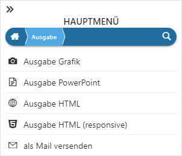

Durch Anwahl des Eintrags "Ausgabe" im Hauptmenü wird die Ausgabe-Auswahl geöffnet.

An dieser Stelle kann das Format der Ausgabe gewählt werden. Die Ausgabe orientiert sich dabei immer an der aktuellen Anzeige des Power Reports. Dieses betrifft (neben dem Inhalt) auch die Größe des Widgets.
Ø
Bei diesem Ausgabeformat werden alle Widgets der Vorlage in einer png-Datei abgespeichert. Die Grafik wird hierbei ohne Hintergrund (d.h. transparent) ausgegeben.
Ø
Durch Anwahl von "Ausgabe PowerPoint" wird eine pptx-Datei erzeugt. Hierbei wird für jedes Widget eine eigene Folie erzeugt.
Ø
Bei diesem Ausgabeformat die Widgets in einer html-Datei abgespeichert.
Ø
Bei diesem Ausgabeformat die Widgets in einer html-Datei (Responsiv-Format) abgespeichert.
Ø
Durch Anwahl von "als Mail versenden" wird eine E-Mail mit allen Widgets der Vorlage aufbereitet. Hierbei sind folgende Punkte zu beachten:
ü Zur Nutzung dieser Funktion muss das Modul "WinLine BI Enterprise Report" oder "WinLine BI CORPORATE" lizensiert sein.
ü Der Versand findet über das Programm "MesoMail" statt, d.h. dort muss ein entsprechendes Mailkonto eingerichtet sein.